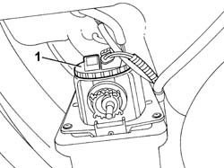

5540D14 L/H OR R/H FOG LAMP BULB (ONE) - R+R
- Path
- Procedures > 55 ELECTRICAL EQUIPMENT > 5540 EXTERIOR LIGHTING > 5540D FOG LAMPS > 5540D14 L/H OR R/H FOG LAMP BULB (ONE) - R+R
- Kind
- repair procedure (removal / refitting; the operation number is the code)
- Applies to
- all engines; all production periods
- Interactive page
- https://sloeber94.github.io/elrnDB-fDct/en/#/244001381
Applies to: all engines; all production periods
 Removing
Removing
 Refitting
Refitting- Position the vehicle on the lift.
- Disconnect the negative battery terminal.
- Disconnect the electrical connection for the fog light.
 | Description | Connector |
|---|---|---|
. | Left fog lamp | F015 |
| Description | Connector |
|---|---|---|
. | Right fog lamp | F016 |
1. Release the fog light bulb cover.

Applies to: all engines; all production periods
- Remove the fog light bulb.
Applies to: all engines; all production periods
Refitting
Removing- Fit the fog light bulb.
- Fit the fog light bulb cover.
- Connect the electrical connection.
| Description | Connector |
|---|---|---|
. | Left fog lamp | F015 |
| Description | Connector |
|---|---|---|
. | Right fog lamp | F016 |
- Connect the negative battery terminal.
- Remove the vehicle from the lift.